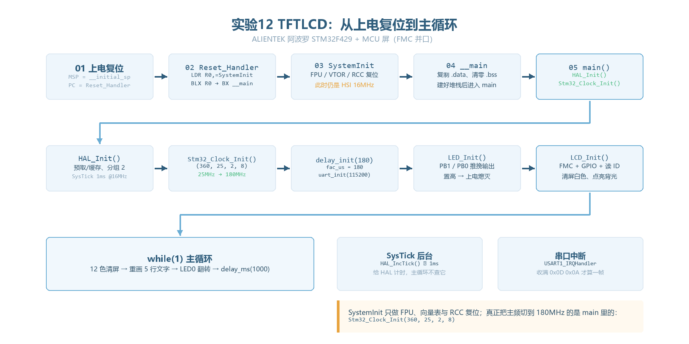
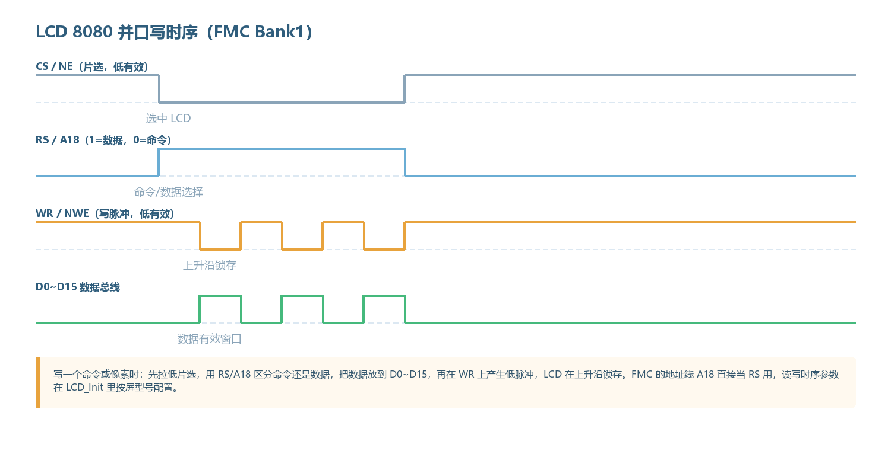
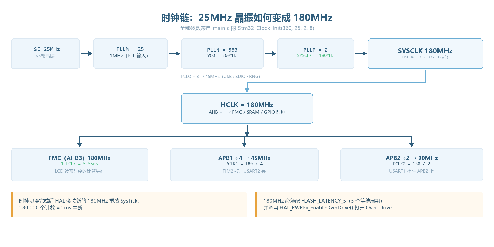
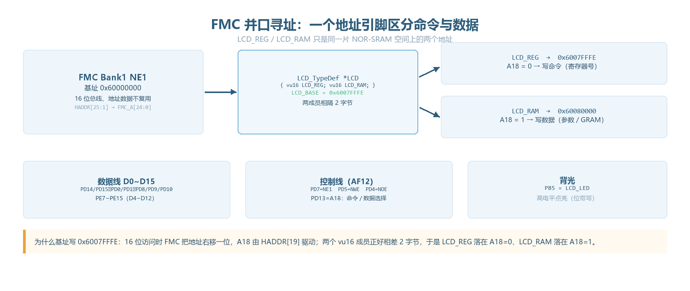
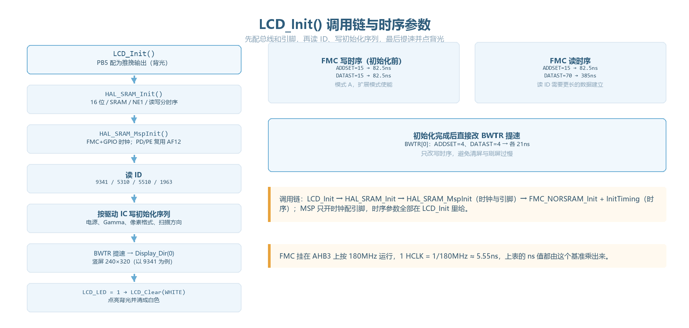
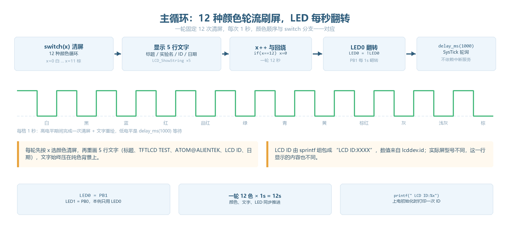

01 实验概述与硬件资源
本实验接在实验11 OLED 之后，把显示从 I2C 小屏换成了 16 位并口 TFT。相比前几个实验，它多了一条完整的外设总线初始化链路：FMC 时钟 → GPIO 复用 → FMC 时序 → 读 ID → 写初始化序列。复位、时钟、时基、串口、LED 这些环节与之前实验一致。
| 资源 | 引脚 / 参数 | 作用 |
|---|---|---|
| LED0 | PB1，推挽输出 | 运行指示灯，低电平点亮 |
| LED1 | PB0，推挽输出 | 本例未使用，初始化时一并置高 |
| 背光 | PB5，推挽输出 | LCD_LED=1 点亮 |
| LCD 数据线 | PD14/PD15、PD0/PD1、PD8/PD9/PD10、PE7~PE15 | D0~D15，16 位并口 |
| LCD 控制线 | PD7=NE1、PD5=NWE、PD4=NOE、PD13=A18 | 片选、写、读、命令/数据选择 |
| 总线 | FMC Bank1 / NE1 / 16 位 / 基址 0x60000000 | 把屏当成一片 NOR-SRAM |
| 调试串口 | USART1：PA9/PA10，115200-8-N-1 | printf 打印 LCD ID |
| 主频 | HSE 25MHz → SYSCLK 180MHz | FMC 时序的计数基准 |
02 目录与文件分工
| 目录 / 文件 | 负责什么 | 本页关注点 |
|---|---|---|
USER/main.c | 初始化顺序与主循环 | while(1) 12 色刷屏、LED 翻转 |
USER/system_stm32f4xx.c | SystemInit：FPU、VTOR、RCC 复位 | 只做复位级配置，不配 PLL |
USER/stm32f4xx_it.c | SysTick_Handler → HAL_IncTick | 1ms 时基中断 |
CORE/startup_stm32f429xx.s | 栈堆、向量表、Reset_Handler | 复位入口 |
SYSTEM/sys/sys.c | Stm32_Clock_Init：PLL 与总线分频 | 180MHz 的来源 |
SYSTEM/delay/delay.c | SysTick 轮询延时 | delay_ms(1000) 的实现 |
SYSTEM/usart/usart.c | USART1 初始化与 printf 重定向 | 打印 LCD ID |
HARDWARE/LED/led.c | PB0 / PB1 推挽输出 | 上电熄灭、运行翻转 |
HARDWARE/LCD/lcd.c / lcd.h | FMC 配置、ID 识别、绘图接口 | 本实验的核心 |
HALLIB/STM32F4xx_HAL_Driver | HAL 库实现，不逐行读 | 只看 HAL_Init、HAL_SRAM_Init、HAL_RCC_ClockConfig |
.c / .h 会把中文注释写成乱码；确需修改时要按 GBK 读入再按 GBK 回写。03 启动流程总览


写命令或像素时，片选拉低 → RS(A18) 选择命令/数据 → 数据放上 D0~D15 → WR 产生低脉冲 → 上升沿锁存。FMC 把地址线 A18 当 RS 用，读写时序参数在 LCD_Init 里按屏型号配置，参数不对会花屏或读不到 ID。
main 函数全文
int main(void)
{
u8 x=0;
u8 lcd_id[12];
HAL_Init(); //初始化HAL库
Stm32_Clock_Init(360,25,2,8); //设置时钟,180Mhz
delay_init(180); //初始化延时函数
uart_init(115200); //初始化USART
LED_Init(); //初始化LED
LCD_Init(); //初始化LCD
POINT_COLOR=RED;
sprintf((char*)lcd_id,"LCD ID:%04X",lcddev.id);//将LCD ID打印到lcd_id数组。
while(1)
{
switch(x)
{
case 0:LCD_Clear(WHITE);break;
case 1:LCD_Clear(BLACK);break;
// case 2~10：BLUE / RED / MAGENTA / GREEN / CYAN / YELLOW / BRRED / GRAY / LGRAY
case 11:LCD_Clear(BROWN);break;
}
POINT_COLOR=RED;
LCD_ShowString(10,40,240,32,32,"Apollo STM32F4/F7");
LCD_ShowString(10,80,240,24,24,"TFTLCD TEST");
LCD_ShowString(10,110,240,16,16,"ATOM@ALIENTEK");
LCD_ShowString(10,130,240,16,16,lcd_id); //显示LCD ID
LCD_ShowString(10,150,240,12,12,"2016/1/6");
x++;
if(x==12)x=0;
LED0=!LED0;
delay_ms(1000);
}
}
顺序为什么不能换
- HAL_Init 必须最先：它建立 1ms 时基、开 Flash cache / 预取、设置中断优先级分组 2，后面的 HAL 函数都依赖这些前提。
- 时钟必须在 delay_init 之前：
delay_init(180)把 180 写进fac_us，如果先延时后配时钟，1ms 会被算短或算长。 - 串口在 LCD 之前：
LCD_Init内部会printf(" LCD ID:%x\r\n")，串口没初始化就看不到这行关键信息。 - LCD_Init 最后：它依赖系统时钟（FMC 时序按 180MHz 算）和
delay_ms(50)（等屏上电稳定）。
USER/main.c，只把 case 2~10 合并成一行注释，其余保持原样。04 启动文件与向量表
| 项目 | 源码中的值 | 含义 |
|---|---|---|
Stack_Size | EQU 0x400 | 主栈 1KB，__initial_sp 指向栈顶 |
Heap_Size | EQU 0x200 | 堆 512B，仅 malloc 使用 |
__Vectors[0] | DCD __initial_sp | 复位后 MSP 取此值 |
__Vectors[1] | DCD Reset_Handler | 复位后 PC 取此值 |
VECT_TAB_OFFSET | 0x00 | SystemInit 中 VTOR = FLASH_BASE |
AREA RESET, DATA, READONLY
EXPORT __Vectors
__Vectors DCD __initial_sp ; Top of Stack
DCD Reset_Handler ; Reset Handler
DCD NMI_Handler ; NMI Handler
...
Reset_Handler PROC
EXPORT Reset_Handler [WEAK]
IMPORT SystemInit
IMPORT __main
LDR R0, =SystemInit
BLX R0
LDR R0, =__main
BX R0
ENDP
启动文件只做三件事：定义栈堆空间、摆放向量表、把执行流交给 SystemInit 再交给 __main。全局变量初值的搬运（.data 从 Flash 复制到 RAM）和 .bss 清零不在这个汇编文件里，而由 __main 调用的 C 库初始化代码完成。
0x08000000，本工程 VECT_TAB_OFFSET=0，没有为 Bootloader 做偏移重定位；如果把程序放到别的地址运行，这里必须同步改。05 SystemInit 与 HAL_Init
void SystemInit(void)
{
#if (__FPU_PRESENT == 1) && (__FPU_USED == 1)
SCB->CPACR |= ((3UL << 10*2)|(3UL << 11*2)); /* CP10/CP11 全权限 */
#endif
RCC->CR |= (uint32_t)0x00000001; // 打开 HSI
RCC->CFGR = 0x00000000; // 复位总线分频
RCC->CR &= (uint32_t)0xFEF6FFFF; // 关 HSEON / CSSON / PLLON
RCC->PLLCFGR = 0x24003010; // PLL 复位值
RCC->CIR = 0x00000000; // 关所有 RCC 中断
SCB->VTOR = FLASH_BASE | VECT_TAB_OFFSET; // 0x08000000
}
| 动作 | 位置 | 影响 |
|---|---|---|
| FPU CP10/CP11 全权限 | SystemInit | 后续浮点指令不会触发 UsageFault |
| VTOR = FLASH_BASE | SystemInit | 向量表固定在 0x08000000 |
| HSION、CFGR 清零 | SystemInit | 复位后先跑 HSI 16MHz |
| I-Cache / D-Cache / 预取 | HAL_Init | 提高 180MHz 下的取指与取数效率 |
| 优先级分组 2 | HAL_Init | 2 位抢占 + 2 位子优先级 |
| SysTick 1ms | HAL_Init → HAL_InitTick | 在 16MHz 下重装 16000 个计数 |
HAL_Init 依次开指令缓存、数据缓存、预取，然后 HAL_NVIC_SetPriorityGrouping(NVIC_PRIORITYGROUP_2)，最后 HAL_InitTick(TICK_INT_PRIORITY) 用 HAL_SYSTICK_Config(HAL_RCC_GetHCLKFreq()/1000) 建 1ms 中断。此时时钟还是 HSI，所以第一次装的是 16000。
SystemCoreClock 此时仍是 16000000。真正把它改成 180000000 的是 main 里的 HAL_RCC_ClockConfig()，它同时会以新主频重装 SysTick。06 时钟链：25MHz → 180MHz

__HAL_RCC_PWR_CLK_ENABLE(); __HAL_PWR_VOLTAGESCALING_CONFIG(PWR_REGULATOR_VOLTAGE_SCALE1); // 电压等级 1 RCC_OscInitStructure.OscillatorType = RCC_OSCILLATORTYPE_HSE; RCC_OscInitStructure.HSEState = RCC_HSE_ON; RCC_OscInitStructure.PLL.PLLState = RCC_PLL_ON; RCC_OscInitStructure.PLL.PLLSource = RCC_PLLSOURCE_HSE; RCC_OscInitStructure.PLL.PLLM = pllm; // 25 → 1MHz RCC_OscInitStructure.PLL.PLLN = plln; // ×360 → 360MHz RCC_OscInitStructure.PLL.PLLP = pllp; // ÷2 → 180MHz RCC_OscInitStructure.PLL.PLLQ = pllq; // ÷8 → 45MHz HAL_RCC_OscConfig(&RCC_OscInitStructure); HAL_PWREx_EnableOverDrive(); // 180MHz 必须开 Over-Drive RCC_ClkInitStructure.SYSCLKSource = RCC_SYSCLKSOURCE_PLLCLK; RCC_ClkInitStructure.AHBCLKDivider = RCC_SYSCLK_DIV1; RCC_ClkInitStructure.APB1CLKDivider = RCC_HCLK_DIV4; RCC_ClkInitStructure.APB2CLKDivider = RCC_HCLK_DIV2; HAL_RCC_ClockConfig(&RCC_ClkInitStructure, FLASH_LATENCY_5);
| 参数 | 源码 | 计算 | 结果 |
|---|---|---|---|
| PLL 输入 | PLLM = 25 | 25MHz ÷ 25 | 1MHz |
| VCO | PLLN = 360 | 1MHz × 360 | 360MHz |
| SYSCLK | PLLP = 2 | 360MHz ÷ 2 | 180MHz |
| HCLK | AHB ÷1 | 180 ÷ 1 | 180MHz |
| PCLK1 | APB1 ÷4 | 180 ÷ 4 | 45MHz |
| PCLK2 | APB2 ÷2 | 180 ÷ 2 | 90MHz |
| USB / SDIO / RNG | PLLQ = 8 | 360 ÷ 8 | 45MHz |
| Flash 等待 | FLASH_LATENCY_5 | 5 个等待周期 | 6 个 CPU 周期 |
HAL_RCC_ClockConfig 末尾会调用 HAL_InitTick，以 180MHz 重装 SysTick 为 180000，得到真正的 1ms。07 延时、串口与 LED
延时：SysTick 轮询，不依赖中断
void delay_init(u8 SYSCLK)
{
HAL_SYSTICK_CLKSourceConfig(SYSTICK_CLKSOURCE_HCLK); // SysTick 时钟 = HCLK
fac_us=SYSCLK; // 180MHz → 1us = 180 个计数
}
void delay_us(u32 nus)
{
u32 ticks; u32 told,tnow,tcnt=0;
u32 reload=SysTick->LOAD;
ticks=nus*fac_us;
told=SysTick->VAL;
while(1)
{
tnow=SysTick->VAL;
if(tnow!=told)
{
if(tnow<told)tcnt+=told-tnow;
else tcnt+=reload-tnow+told;
told=tnow;
if(tcnt>=ticks)break;
}
}
}
void delay_ms(u16 nms)
{
u32 i;
for(i=0;i<nms;i++) delay_us(1000);
}
非 OS 模式下 delay_init 只做两件事：把 SysTick 时钟源设为 HCLK、记下 fac_us=180。delay_us 直接读 SysTick->VAL 的递减计数，所以即使 SysTick 中断被关掉也不会卡死；代价是忙等，CPU 在这段时间不做别的事。
串口：printf 重定向到 USART1
int fputc(int ch, FILE *f)
{
while((USART1->SR&0X40)==0); // 等 TC（发送完成）置位
USART1->DR = (u8) ch;
return ch;
}
// HAL_UART_MspInit 中
GPIO_Initure.Pin=GPIO_PIN_9; // PA9 TX
GPIO_Initure.Mode=GPIO_MODE_AF_PP;
GPIO_Initure.Pull=GPIO_PULLUP;
GPIO_Initure.Speed=GPIO_SPEED_FAST;
GPIO_Initure.Alternate=GPIO_AF7_USART1;
HAL_GPIO_Init(GPIOA,&GPIO_Initure);
GPIO_Initure.Pin=GPIO_PIN_10; // PA10 RX
HAL_GPIO_Init(GPIOA,&GPIO_Initure);
__HAL_UART_ENABLE_IT(huart,UART_IT_RXNE);
HAL_NVIC_EnableIRQ(USART1_IRQn);
HAL_NVIC_SetPriority(USART1_IRQn,3,3); // 抢占 3，子优先级 3
printf 是阻塞输出：每写一个字节都要等发送完成。所以 LCD_Init 里那行 LCD ID 会占用一点启动时间，但换来的是不依赖中断、不会丢字的调试输出。
LED：上电先熄灭
void LED_Init(void)
{
GPIO_InitTypeDef GPIO_Initure;
__HAL_RCC_GPIOB_CLK_ENABLE();
GPIO_Initure.Pin=GPIO_PIN_0|GPIO_PIN_1; // PB0 / PB1
GPIO_Initure.Mode=GPIO_MODE_OUTPUT_PP;
GPIO_Initure.Pull=GPIO_PULLUP;
GPIO_Initure.Speed=GPIO_SPEED_HIGH;
HAL_GPIO_Init(GPIOB,&GPIO_Initure);
HAL_GPIO_WritePin(GPIOB,GPIO_PIN_0,GPIO_PIN_SET);
HAL_GPIO_WritePin(GPIOB,GPIO_PIN_1,GPIO_PIN_SET); // 高电平 → 熄灭
}
uwTick（HAL_Delay 依赖它），而本工程的 delay_ms 走轮询。两套机制共用同一个 SysTick，互不干扰，但别把 HAL_Delay 和 delay_ms 的精度混为一谈。08 位带操作与 LCD 背光
// SYSTEM/sys/sys.h #define BITBAND(addr, bitnum) ((addr & 0xF0000000)+0x2000000+((addr &0xFFFFF)<<5)+(bitnum<<2)) #define BIT_ADDR(addr, bitnum) MEM_ADDR(BITBAND(addr, bitnum)) #define PBout(n) BIT_ADDR(GPIOB_ODR_Addr,n) // 输出 // HARDWARE/LCD/lcd.h #define LCD_LED PBout(5) // 背光，PB5，高电平点亮
Cortex-M4 的位带把外设寄存器的某一位映射到别名区的一个字，写这个字就等于原子地置位或清零原寄存器。所以 LCD_LED=1 编译出来是一条普通的存储指令，不会影响 GPIOB 其它引脚。
| 宏 | 展开含义 | 用途 |
|---|---|---|
BITBAND(addr,bit) | 把外设地址映射到 0x42000000 别名区 | 位带地址算法 |
PBout(n) | GPIOB ODR 第 n 位的别名地址 | 写引脚输出电平 |
LCD_LED | PBout(5) | 1 = 背光亮，0 = 背光灭 |
// LCD_Init 开头：先把 PB5 配成推挽输出 __HAL_RCC_GPIOB_CLK_ENABLE(); GPIO_Initure.Pin=GPIO_PIN_5; GPIO_Initure.Mode=GPIO_MODE_OUTPUT_PP; GPIO_Initure.Pull=GPIO_PULLUP; GPIO_Initure.Speed=GPIO_SPEED_HIGH; HAL_GPIO_Init(GPIOB,&GPIO_Initure); // LCD_Init 末尾：初始化成功后再点背光 LCD_Display_Dir(0); LCD_LED=1; LCD_Clear(WHITE);
09 FMC 总线与地址映射

// HARDWARE/LCD/lcd.h typedef struct { vu16 LCD_REG; vu16 LCD_RAM; } LCD_TypeDef; // Bank1.sector1，HADDR[27,26]=00，A18 作为命令/数据区分线 #define LCD_BASE ((u32)(0x60000000 | 0x0007FFFE)) #define LCD ((LCD_TypeDef *) LCD_BASE)
| 访问 | 地址 | A18 | 屏上实际动作 |
|---|---|---|---|
LCD->LCD_REG | 0x6007FFFE | 0 | 写命令号（LCD_WR_REG） |
LCD->LCD_RAM | 0x60080000 | 1 | 写参数 / 像素数据（LCD_WR_DATA） |
片选 NE1、写使能 NWE、读使能 NOE 由 FMC 自动产生，CPU 只需要对上面两个地址做 16 位读写。这样驱动代码里就出现了 LCD->LCD_REG = cmd; 这种「像访问内存一样访问屏」的写法。
10 LCD_Init：总线、引脚与时序

SRAM_Handler.Init.NSBank = FMC_NORSRAM_BANK1; // 使用 NE1 SRAM_Handler.Init.DataAddressMux = FMC_DATA_ADDRESS_MUX_DISABLE; // 地址/数据不复用 SRAM_Handler.Init.MemoryType = FMC_MEMORY_TYPE_SRAM; SRAM_Handler.Init.MemoryDataWidth = FMC_NORSRAM_MEM_BUS_WIDTH_16; // 16 位 SRAM_Handler.Init.WriteOperation = FMC_WRITE_OPERATION_ENABLE; SRAM_Handler.Init.ExtendedMode = FMC_EXTENDED_MODE_ENABLE; // 读写分开时序 FMC_ReadWriteTim.AddressSetupTime = 0x0F; // ADDSET = 15 → 82.5ns FMC_ReadWriteTim.DataSetupTime = 0x46; // DATAST = 70 → 385ns FMC_ReadWriteTim.AccessMode = FMC_ACCESS_MODE_A; FMC_WriteTim.AddressSetupTime = 0x0F; FMC_WriteTim.DataSetupTime = 0x0F; // DATAST = 15 → 82.5ns HAL_SRAM_Init(&SRAM_Handler,&FMC_ReadWriteTim,&FMC_WriteTim); delay_ms(50); // 等屏上电稳定
| 时序 | ADDSET | DATAST | 折算（1 HCLK ≈ 5.55ns） |
|---|---|---|---|
| 读 | 15 | 70 | 82.5ns / 385ns |
| 写（初始化前） | 15 | 15 | 82.5ns / 82.5ns |
| 写（初始化后） | 4 | 4 | 21ns / 21ns |
HAL_SRAM_Init 先回调 HAL_SRAM_MspInit：开 FMC / GPIOD / GPIOE 时钟，把 PD0/1/4/5/7/8/9/10/13/14/15 与 PE7~PE15 配成 GPIO_MODE_AF_PP、GPIO_AF12_FMC；随后才写 FMC 控制寄存器与时序寄存器。顺序反了，时序参数会写进一个时钟还没打开的控制器。
FMC_Bank1E->BWTR[0]。11 LCD ID 识别与驱动初始化
// 尝试 9341 LCD_WR_REG(0XD3); lcddev.id=LCD_RD_DATA(); // dummy read lcddev.id=LCD_RD_DATA(); // 读到 0x00 lcddev.id=LCD_RD_DATA(); // 读取 0x93 lcddev.id<<=8; lcddev.id|=LCD_RD_DATA(); // 读取 0x41 → 0x9341 // 不是 9341 再依次试 0xD4 / 0xDA00+0xDB00+0xDC00 / 0xA1 if(lcddev.id==0x8000)lcddev.id=0x5510; // NT35510 读回 0x8000，强制改 5510 if(lcddev.id==0X5761)lcddev.id=0X1963; // SSD1963 读回 0x5761，强制改 1963 printf(" LCD ID:%x\r\n",lcddev.id);
| 读命令 | 回读 | 判定 | 后续处理 |
|---|---|---|---|
| 0xD3 | 0x9341 | ILI9341 | 按 9341 序列初始化，240×320 |
| 0xD4 | 0x5310 | NT35310 | 按 5310 序列初始化，320×480 |
| 0xDA00 / 0xDB00 / 0xDC00 | 0x8000 → 强制 5510 | NT35510 | 按 5510 序列初始化，480×800 |
| 0xA1 | 0x5761 → 强制 1963 | SSD1963 | 特殊初始化 + 背光设置，480×800 |
四段读 ID 代码结构完全一样：发命令 → 丢弃第一次读（dummy）→ 读高字节 → 左移 8 位 → 读低字节。前半段各 IC 的回读字节数不同，所以第一次读的用处也不同，但最终都拼成一个 16 位 lcddev.id。
lcddev.id 一旦被改写，后面所有判断都以改写后的值为准。12 分辨率、扫描方向与写提速
void LCD_Display_Dir(u8 dir)
{
lcddev.dir=dir;
if(dir==0) // 竖屏
{
lcddev.width=240;
lcddev.height=320;
if(lcddev.id==0X9341||lcddev.id==0X5310)
{
lcddev.wramcmd=0X2C;
lcddev.setxcmd=0X2A;
lcddev.setycmd=0X2B;
if(lcddev.id==0X5310){ lcddev.width=320; lcddev.height=480; }
}else if(lcddev.id==0x5510){ /* width=480, height=800；指令 0x2C00/0x2A00/0x2B00 */ }
else if(lcddev.id==0X1963){ /* width=480, height=800；X/Y 指令互换 */ }
}
LCD_Scan_Dir(DFT_SCAN_DIR);
}
| LCD ID | 竖屏 width × height | wramcmd | setxcmd / setycmd |
|---|---|---|---|
| 0x9341 | 240 × 320 | 0x2C | 0x2A / 0x2B |
| 0x5310 | 320 × 480 | 0x2C | 0x2A / 0x2B |
| 0x5510 | 480 × 800 | 0x2C00 | 0x2A00 / 0x2B00 |
| 0x1963 | 480 × 800 | 0x2C | 0x2B / 0x2A（互换） |
// 初始化完成后把写时序压到最快 if(lcddev.id==0X9341||lcddev.id==0X5310||lcddev.id==0X5510||lcddev.id==0X1963) { FMC_Bank1E->BWTR[0]&=~(0XF<<0); // ADDSET 清零 FMC_Bank1E->BWTR[0]&=~(0XF<<8); // DATAST 清零 FMC_Bank1E->BWTR[0]|=4<<0; // ADDSET = 4 → 21ns FMC_Bank1E->BWTR[0]|=4<<8; // DATAST = 4 → 21ns } LCD_Display_Dir(0); // 默认竖屏 LCD_LED=1; // 点亮背光 LCD_Clear(WHITE); // 清成白色
main 里的 5 行文字按 240 宽排布：x 固定 10，y 从 40 到 150，字号依次 32/24/16/16/12。换成 480 宽的屏时这段代码仍然能跑，只是内容只占左上角一块。
setxcmd / setycmd 与其它 IC 相反，这是驱动里唯一需要交换 X/Y 指令的型号；只改分辨率不改指令，会出现坐标错位。13 主循环与现象

while(1)
{
switch(x)
{
case 0:LCD_Clear(WHITE);break;
case 1:LCD_Clear(BLACK);break;
// case 2~10 依次为 BLUE、RED、MAGENTA、GREEN、CYAN、YELLOW、BRRED、GRAY、LGRAY
case 11:LCD_Clear(BROWN);break;
}
POINT_COLOR=RED;
LCD_ShowString(10,40,240,32,32,"Apollo STM32F4/F7");
LCD_ShowString(10,80,240,24,24,"TFTLCD TEST");
LCD_ShowString(10,110,240,16,16,"ATOM@ALIENTEK");
LCD_ShowString(10,130,240,16,16,lcd_id);
LCD_ShowString(10,150,240,12,12,"2016/1/6");
x++;
if(x==12)x=0;
LED0=!LED0;
delay_ms(1000);
}
| 操作 | 可观察现象 |
|---|---|
| x 从 0 走到 11 | 屏底色依次：白 → 黑 → 蓝 → 红 → 品红 → 绿 → 青 → 黄 → 棕红 → 灰 → 浅灰 → 棕 |
| 每轮重画 5 行 | 标题、TFTLCD TEST、ATOM@ALIENTEK、LCD ID、日期，都是红色字 |
LED0=!LED0 | PB1 每秒翻转一次，LED0 亮灭交替 |
delay_ms(1000) | 每种颜色停留 1 秒，一轮 12 秒后回到白色 |
| 串口输出 | 上电时打印一次 LCD ID:9341（随实际屏型号变化） |
POINT_COLOR=RED，即使背景清成红色也不改色，所以 case 3 那一秒红底红字几乎看不见——这是源码本来的行为，不是故障。14 总结与排查
| 结论 | 文件 | 函数 / 宏 | 关键语句 |
|---|---|---|---|
| 复位入口 | CORE/startup_stm32f429xx.s | Reset_Handler | LDR R0,=SystemInit → BLX → __main |
| 栈 1KB / 堆 512B | 同上 | Stack_Size / Heap_Size | 0x400 / 0x200 |
| FPU 与向量表 | USER/system_stm32f4xx.c | SystemInit | SCB->CPACR；SCB->VTOR=FLASH_BASE |
| 优先级分组 2 | HALLIB/.../stm32f4xx_hal.c | HAL_Init | HAL_NVIC_SetPriorityGrouping(NVIC_PRIORITYGROUP_2) |
| 主频 180MHz | SYSTEM/sys/sys.c | Stm32_Clock_Init | PLLN=360、PLLM=25、PLLP=2；FLASH_LATENCY_5 |
| 1ms 时基 | USER/stm32f4xx_it.c | SysTick_Handler | HAL_IncTick() |
| 命令 / 数据选择 | HARDWARE/LCD/lcd.h | LCD_BASE | 0x60000000 | 0x0007FFFE，A18 |
| 写时序提速 | HARDWARE/LCD/lcd.c | LCD_Init | BWTR[0] ADDSET=4、DATAST=4 |
| 主循环 | USER/main.c | main | switch(x) 12 色；delay_ms(1000) |
| 现象 | 最可能的原因 | 排查顺序 |
|---|---|---|
| 白屏、无背光 | PB5 没置高或 LCD_Init 没执行完 | 量 PB5 电平 → 查 LCD_Init 是否卡在读 ID → 查 FMC 时钟使能 |
| 花屏、颜色错乱 | 16 位配置或地址线不对 | 确认 MemoryDataWidth=16、A18=PD13、ADDSET/DATAST 未被改小 |
| 读不到 ID | 屏未上电稳定或读时序太短 | 加大 delay_ms(50) → 加大 DATAST → 示波器看 NE1/NWE 波形 |
| 死在 while(1) | 时钟或 Over-Drive 配置失败 | 看 HAL_RCC_OscConfig / ClockConfig 返回值 → 确认 HSE 为 25MHz |
| 看起来每 12 秒「卡」一次 | 主循环本来就是 1 秒一轮 | delay_ms(1000) 是忙等，不是死机；用 LED0 翻转是否规律来确认 |